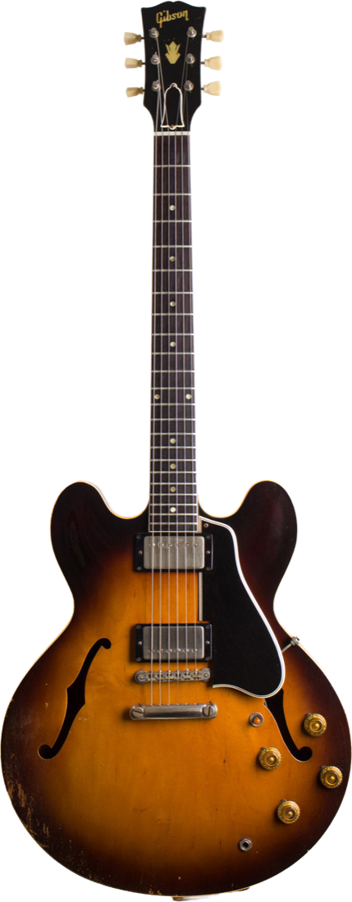
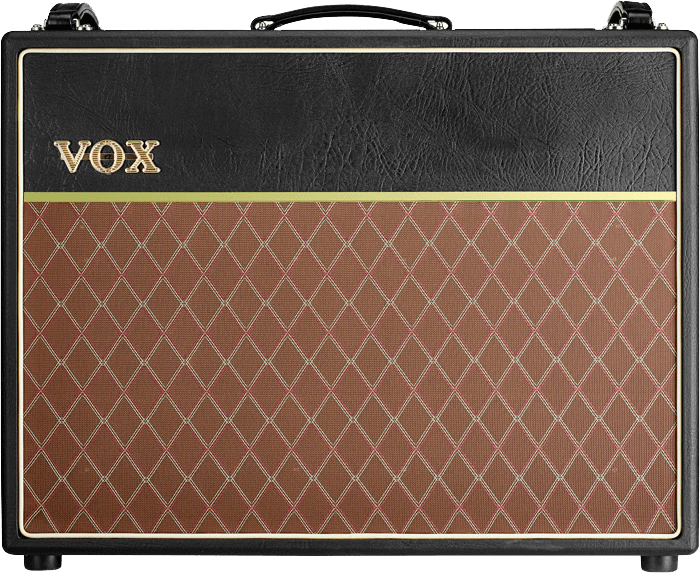

Signal Chain
Pick a guitar, put pedals on the cable and choose an amp. The line between them is the sound itself, drawn as it leaves each box.


Pick a guitar, put pedals on the cable and choose an amp. The line between them is the sound itself, drawn as it leaves each box.

